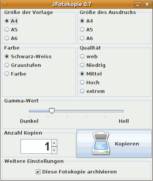
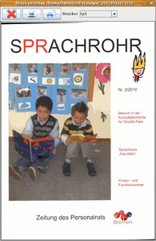

JFotokopie
Dieser Artikel wurde für die folgenden Ubuntu-Versionen getestet:
Ubuntu 16.04 Xenial Xerus
Ubuntu 14.04 Trusty Tahr
Zum Verständnis dieses Artikels sind folgende Seiten hilfreich:
JFotokopie ist ein einfaches, in Java verfasstes Programm, das die grundlegenden Funktionen eines Fotokopierers zur Verfügung stellt. Benötigt wird dazu ein SANE-tauglicher Scanner und ein Drucker; entwickelt wurde es von iskarion, der ein einfach zu bedienendes Programm nur zum Fotokopieren suchte.
Voraussetzungen¶
Das Programm erfordert eine Java-Laufzeitumgebung (JRE), welche mindestens der Version 1.6 (Java 6) oder neuer entsprechen sollte.
Installation¶
JFotokopie baut auf etliche Kommandozeilen-Werkzeuge auf, installiert[1] werden müssen dazu folgende Pakete:
sane-utils
imagemagick
libtiff-tools
cups-bsd
 mit apturl
mit apturl
Paketliste zum Kopieren:
sudo apt-get install sane-utils imagemagick libtiff-tools cups-bsd
sudo aptitude install sane-utils imagemagick libtiff-tools cups-bsd
Das Programm selbst kann hier  als .tgz-Archiv heruntergeladen werden. Das Archiv entpacken[2] und die versteckte Datei .JFotokopie.properties ins Home-Verzeichnis des Users kopieren. Das eigentliche Programm-Archiv JFotokopie.jar kann in ein beliebiges Verzeichnis kopiert werden. Das .tgz-Archiv enthält außerdem eine LIESMICH.txt-Datei und einen Screenshot mit Informationen zum Programm.
als .tgz-Archiv heruntergeladen werden. Das Archiv entpacken[2] und die versteckte Datei .JFotokopie.properties ins Home-Verzeichnis des Users kopieren. Das eigentliche Programm-Archiv JFotokopie.jar kann in ein beliebiges Verzeichnis kopiert werden. Das .tgz-Archiv enthält außerdem eine LIESMICH.txt-Datei und einen Screenshot mit Informationen zum Programm.
Hinweis!
Fremdsoftware kann das System gefährden.
Konfiguration¶
 Die Konfiguration erfolgt über die .JFotokopie.properties-Datei, die in einem Editor[3] geöffnet und den eigenen Bedingungen und Wünschen entsprechend angepasst werden muss. Das Format entspricht einer Java-Properties-Datei. Bitte insbesondere beachten, dass bestimmten Sonderzeichen (z.B. "=") ein "\" vorangestellt werden muss.
Als Standard sind als Ein- und Ausgabegrößen DIN-A4, -A5 und -A6 vorgesehen, diese können auch um eigenen Formate ergänzt werden; Eingabeformate in der Form
SOURCE_SIZE_3=A6,-x 105mm -y 148mm
wobei -x die Breite, -y die Höhe angibt; A6 ist der Formatname, der im Bedienfenster angezeigt wird.
Ausgabeformate, z.B.
TARGET_SIZE_3=A6,-w 4.13 -h 5.82
werden entsprechend erstellt, nur dass sie in Zoll angegeben werden müssen.
Ebenso lassen sich weitere Auflösungen erstellen, z.B. mit:
RESOLUTION_4=Extrem,--resolution 1200
Außerdem können auch (wenn unterstützt) weitere Farb-Modi angeben werden, und der Umfang, in dem die Helligkeit (BRIGHTNESS) reguliert werden kann.
Welche Angaben möglich sind, hängt vom verwendeten Scanner/Backend  ab. Um die für den eigenen Scanner vorgesehenen Optionen aufzurufen, kann mit dem Befehl
ab. Um die für den eigenen Scanner vorgesehenen Optionen aufzurufen, kann mit dem Befehl
scanimage --help
eine entsprechende Liste mit den verwendbaren Parametern aufgerufen werden (siehe auch Backend-spezifische Einstellungen).
Im Block
SOURCE_SIZE=A4 TARGET_SIZE=A4 COLOUR=Schwarz-Weiss BRIGHTNESS=0 RESOLUTION=Mittel NUMBEROFCOPIES=1
können die Standard-Werte, die beim Programmaufruf eingestellt sind, definiert werden. Die Variable TEMPFILEPATH legt das Verzeichnis fest, in dem die erstellten Dateien für Vorschau und Ausdruck abgelegt werden. Standard ist das Home-Verzeichnis des Users, bei anderen Pfaden auf ein / am Ende achten!
Außerdem kann mit ARCHIVE=true/false festgelegt werden, ob die Daten gespeichert werden sollen oder nicht.
SCAN_COMMAND=scanimage --format tiff $COLOUR $RESOLUTION --brightness $BRIGHTNESS -l 0 -t 0 $SOURCE_SIZE CREATE_PRINT_PREVIEW_COMMAND=convert -resize 1024x768> $INPUTFILE $OUTPUTFILE CONVERT_TO_PS_COMMAND=tiff2ps 3 $TARGET_SIZE $INPUTFILE PRINT_COMMAND=lpr -P$PRINTER -r -\#$NUMBEROFCOPIES $INPUTFILE COMPOSE_COMMAND=convert $BACKGROUND_IMAGE $OVERLAY_IMAGE -compose multiply -composite $OUTPUTFILE EMAIL_COMMAND=/usr/bin/thunderbird -compose attachment=\'$INPUTFILE\'
Diese Parameter bestimmen, welche Kommandozeilenprogramme für das Scannen (SCAN_COMMAND), Erstellen der Druckvorschau (CREATE_PRINT_PREVIEW_COMMAND), Vorbereiten des Ausdrucks (CONVERT_TO_PS_COMMAND) sowie für das Drucken (PRINT_COMMAND) verwendet werden. Der Parameter $PRINTER steht für den Drucker, der im Dropdown-Menü ausgewählt wurde, im Normalfall wird der Standarddrucker verwendet. In der EMAIL_COMMAND-Zeile wird das zu verwendende E-Mail-Programm aufgerufen, standardmäßig ist hier Thunderbird eingestellt; Evolution ließe sich z.B. mit der Zeile EMAIL_COMMAND=/usr/bin/evolution mailto:?attach=$INPUTFILE verwenden. Die Kopie wird dann an eine neue E-Mail angehängt. Die mit $ gekennzeichneten Platzhalter werden von JFotokopie zur Laufzeit durch die zuvor beschriebenen Optionen ersetzt. Die $INPUTFILE und $OUTPUTFILE ersetzenden Dateinamen werden von JFotokopie selbst in der Form Fotokopie_<DatumUhrzeit>.<Endung> generiert.
GUI anpassen¶
Mit den Angaben zu VISIBILITY, z.B.
VISIBILITY_SOURCE_SIZE=true
lassen sich mit false Teile der GUI ausblenden; das kann z.B. sinnvoll sein, wenn das Backend bestimmte Optionen nicht unterstützt, der Drucker sowieso nur schwarz-weiß drucken kann, oder das Ausgabeformat immer das gleiche sein soll.
Bei den mit LABEL beginnenden Parametern können die in der GUI angezeigten Namen der Funktionen geändert werden, wenn z.B. eine übersetzte Version des Programms erstellt werden soll oder der Schieberegler "umgewidmet" worden ist (siehe unten).
Testen der Konfiguration¶
Um die Konfiguration zu testen, können die einzelnen Befehle im Terminal[4] eingegeben und ausgeführt werden; dazu die Variablen durch die tatsächlichen Werte ersetzen. Falls es dabei zu Fehlermeldungen (nicht unterstützte Optionen etc.) kommt, muss der Befehl angepasst, ggf. Optionen für das eigenen Backend/Scanner abgeändert, oder auch ganz auf nicht-unterstützte Optionen verzichtet werden.

Benutzung¶
Der Aufruf des Programms[5] erfolgt in dem Verzeichnis, in dem JFotokopie.jar abgelegt ist, mit dem Befehl
java -jar JFotokopie.jar
Komfortabler ist es, sich einen Eintrag im Hauptmenü[6] anzulegen, und das Programm so zu starten. Dazu in einem Editor ein kleines Skript mit folgendem Inhalt erstellen:
1 2 3 | #!/bin/bash cd /Pfad/zum/Verzeichnis/von/JFotokopie.jar/ java -jar JFotokopie.jar |
Das Skript unter einem aussagekräftigen Namen, z.B. Fotokopierer.sh, abspeichern und ausführbar[7] machen. Als Startbefehl im Hauptmenü dann
/Pfad/zum/Fotokopierer.sh
angeben.
Die Benutzung selbst ist denkbar einfach: Das Original in den Scanner legen, ggf. die gewünschten Einstellungen für Ein- und Ausgabeformat, Auflösung und Helligkeit machen, Anzahl der Kopien angeben und auf "Kopieren" drücken. Wenn die Fotokopien für den späteren Gebrauch archiviert werden sollen, die entsprechende Checkbox aktivieren; ansonsten werden die Dateien nach Abschluss wieder gelöscht.
Es wird ein Vorschaufenster geöffnet, in dem dann entschieden werden kann, ob das Bild ausgedruckt, als E-Mail verschickt oder verworfen werden soll, im Dropdown-Menü ganz rechts kann der gewünschte Drucker ausgewählt werden (ein Abbruch des Druckvorgangs ist allerdings nicht vorgesehen).
Mit JFotokopie lassen sich auch mehrere Kopiervorgänge "übereinander" legen und als Ergebnis ausdrucken. Sinnvoll z.B. wenn man die Vorder- und Rückseite einer kleinen Vorlage (Ausweis etc., aber auch als "künstlerischer Effekt" brauchbar) auf einem Blatt haben möchte, ohne dazu das Papier zweimal in den Drucker legen zu müssen. Dazu wird nach Erstellen der ersten Vorschau einfach ein neuer Scanvorgang gestartet, ohne den ersten auszudrucken. Im zweiten Vorschaufenster erscheinen dann beide Scanvorgänge übereinandergelegt. Der Vorgang ist auch mehrmals wiederholbar.
JFotokopie nutzt scanimage , um das Bild im .tiff-Format zu erstellen, für die Vorschau wird von ImageMagick eine .jpg-Datei daraus erstellt, zum Druck erfolgt mittels tiff2ps (aus dem Paket libtiff-tools) eine Umwandlung in das PostScript-(.ps)-Format. Der Ausdruck selbst erfolgt mit lpr über CUPS.
Backend-spezifische Einstellungen¶
gt68xx¶
Nicht alle Optionen funktionieren mit jedem SANE-Backend; das gt68xx-Backend unterstützt ggf. die Helligkeitseinstellung nicht. Dann kann der Schieberegler auch für eine andere, vom Backend unterstützte Funktion verwendet werden, z.B. kann damit statt dessen die Gamma-Wert-Einstellung vorgenommen werden. Dazu werden in JFotokopie-properties die Werte für BRIGHTNESS_MIN und BRIGHTNESS_MAX auf 0 resp. 5 gesetzt und in der Zeile
SCAN_COMMAND=scanimage --format tiff $COLOUR $RESOLUTION --brightness $BRIGHTNESS -l 0 -t 0 $SOURCE_SIZE
der Eintrag --brightness durch --gamma-value ersetzt. Optional die Einträge für die Namen von Helligkeit in Gamma-Wert, und Hell/Dunkel in 0/5 abändern. So kann die Option --gamma-value via Schieberegler genutzt werden, um die Ausgabe-Helligkeit bzw. den Farbkontrast zu regulieren - je niedriger der Wert, desto dunkler und kontrastreicher werden die Scans.
Dabei lässt sich mit der Variabel BRIGHTNESS_STEP die Schrittweite des Schiebereglers, sowie die Anzahl der Nachkommastellen des jeweiligen Wertes festgelegt werden. Es sind auch nicht-ganzzahlige Schritte möglich. In diesem Fall muss als Dezimaltrennzeichen ein Punkt (kein Komma!) verwendet werden, Beispiele wären
BRIGHTNESS_STEP=3 -> 1, 4, 7, 10... BRIGHTNESS_STEP=1.0 -> 1.0, 2.0, 3.0, 4.0... BRIGHTNESS_STEP=0.2 -> 1.0, 1.2, 1.4, 1.6...
Das Verfahren ließe sich natürlich auch für andere Funktionen realisieren; die Angaben müssen allerdings als Zahlenwerte verwendbar sein.
Für das Backend mögliche Angabe können global für alle Kopien verwendet werden, z.B. mit
SCAN_COMMAND=scanimage --format tiff $COLOUR $RESOLUTION --gamma-value 1.2 -l 0 -t 0 $SOURCE_SIZE
oder auch für die einzelnen Farb-Definitionen angegeben werden, z.B.
COLOUR_3=Farbe,--mode Color --gamma-value 1.8
Die Option --threshold kann in der Einstellung für Schwarz-Weiß verwendet werden, um einen Schwellenwert festzulegen, z.B.
COLOUR_1=Schwarz-Weiss,--mode Lineart --threshold 185
Je höher der threshold-Wert (wählbar zwischen 0 und 255), desto hellere Farben werden als Schwarz interpretiert (sinnvoll, um z.B. kontrastarme Schrift-Vorlagen zu scannen).
- Erstellt mit Inyoka
-
 2004 – 2017 ubuntuusers.de • Einige Rechte vorbehalten
2004 – 2017 ubuntuusers.de • Einige Rechte vorbehalten
Lizenz • Kontakt • Datenschutz • Impressum • Serverstatus -
Serverhousing gespendet von